Cloud Code pour le web vient de sortir, ce qui signifie que vous pouvez désormais utiliser Cloud Code directement dans leur application web, et tout le monde qualifie cela de futur du codage. Mais après l'avoir réellement testé, il y a quelque chose dont personne ne parle. Oui, c'est puissant. Vous pouvez créer de vraies applications directement dans Cloud sans terminal comme avant. Mais une fois que vous essayez réellement de lancer ou de prévisualiser votre application, vous vous rendez compte qu'il y a un piège énorme. Dans cette vidéo, je vais vous montrer ce que c'est, et je vais vous montrer une alternative dont personne ne parle. Passons donc aux choses sérieuses.
Interface & Outils : Interface web de Claude Code (claude.ai/code) et interface de transition vidéo.
Contenu textuel & Code : Commandes Bash (npm run lint, npm run test, git add/commit/push), rapports de build (erreurs: 0, avertissements: 2), et options de création de pull request.
Action / Démonstration : Navigation et démonstration de la génération de code, exécution de tests et préparation d'une pull request via l'interface web de Claude Code.
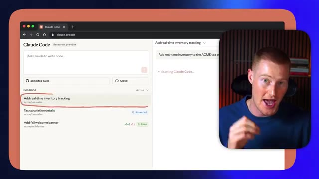
🔍 Agrandir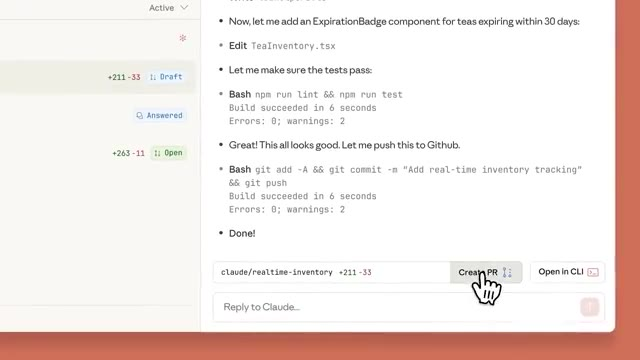
🔍 AgrandirTrès bien, les amis, avant de vous montrer concrètement Cloud Code pour le Web et le mobile en action, nous devons aborder quelques sujets. Je veux d'abord parler du « vibe coding » traditionnel. Pensez à des plateformes comme Bolt.new et Lovable. Ces deux plateformes ont révolutionné la façon dont nous créons des applications en tant que non-techniciens. Et cette vidéo va vraiment s'adresser à ces personnes non techniques qui veulent créer des applications entièrement fonctionnelles à partir de zéro, simplement en écrivant des invites textuelles avec des plateformes comme Bolt, Lovable et Cloud Code.
Interface & Outils : Navigateur web affichant un tableau blanc collaboratif (type Miro/Eraser) avec des captures de Bolt.new et Lovable.
Contenu textuel & Code : Texte « Traditional Vibe Coding » et captures d'écran des interfaces des plateformes Bolt.new et Lovable.
Action / Démonstration : Présentation visuelle des outils de vibe coding par le présentateur.
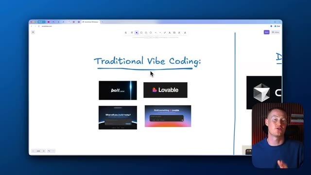
🔍 Agrandir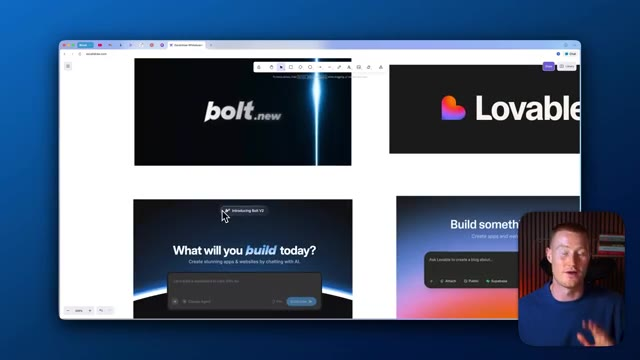
🔍 Agrandir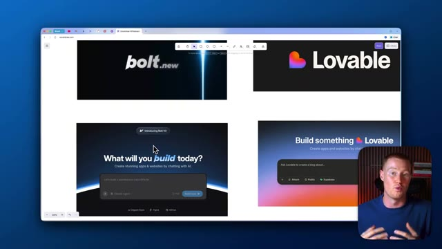
🔍 AgrandirDonc nous avions évidemment cette interface utilisateur qui était extrêmement simple. C'était comme ChatGPT. Nous tapons simplement un message textuel et cela commence réellement à construire notre application pour nous à partir de zéro. Non seulement cela construira notre application, écrira le code, mais cela nous montrera un aperçu de ce à quoi notre application va réellement ressembler. Par exemple, cette application a été construite dans Bolt.new en quelques messages textuels et elle a réellement des API intégrées pour que nous puissions réellement générer des images avec l'outil de génération d'images Gemini et cela s'est transformé en une application web fonctionnelle que nous pouvions réellement utiliser directement à l'intérieur de notre plateforme.
Interface & Outils : Navigateur web affichant une plateforme de développement d'applications assistée par IA (style Lovable/Bolt).
Contenu textuel & Code : Zone de saisie textuelle (prompt) pour créer des applications ou des sites web par simple discussion avec l'IA.
Action / Démonstration : Présentation de l'interface utilisateur textuelle permettant de générer une application à partir de zéro.
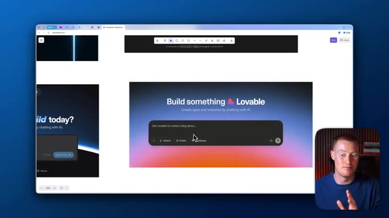
🔍 Agrandir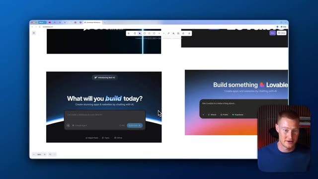
🔍 AgrandirNon seulement cela, mais nous pourrions réellement cliquer sur publier, et ensuite nous pourrions effectivement aller de l'avant et partager ceci sous forme d'URL à des amis afin qu'ils puissent commencer à l'utiliser. Et nous faisons tout cela avec zéro expérience en codage. C'est donc ainsi que ces plateformes fonctionnent, Bolt et Lovable, c'est ainsi qu'elles fonctionnent. Mais passons à la phase suivante du vibe coding. Et cette phase s'appelle le developer vibe coding.
Interface & Outils : Navigateur web affichant le tableau blanc Excalidraw (bolt.new, Lovable, Cursor, Claude Code).
Contenu textuel & Code : Logos et interfaces d'outils de développement assistés par IA (bolt.new, Lovable, Cursor, Claude Code).
Action / Démonstration : Présentation visuelle des différents outils de développement par IA sur un tableau blanc numérique.
Et ce sont des plateformes comme Cursor et Cloud Code, dont je vais parler dans cette vidéo. Et si vous avez déjà utilisé ça auparavant et que vous n'êtes pas technique, vous voyez probablement ça et ça vous donne probablement envie de vomir. Personnellement, je suis un utilisateur d'IA non technique, je n'ai aucune idée de comment utiliser un truc comme ça. Regarder ça me fait juste peur, honnêtement, parce que, je veux dire, on dirait qu'il faut être un programmeur pour vraiment comprendre et utiliser ça.
Interface & Outils : Éditeur de code Cursor, interface web de whiteboard/documentation.
Contenu textuel & Code : Code source en cours d'édition (Rust), interface de chat avec l'assistant IA et modifications proposées.
Action / Démonstration : Présentation des outils de développement assistés par IA (Cursor) pour les non-techniciens.
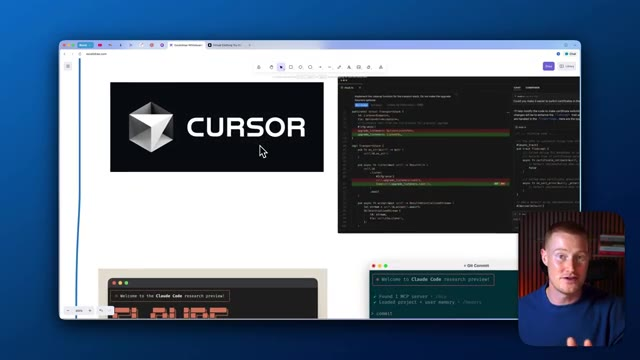
🔍 Agrandir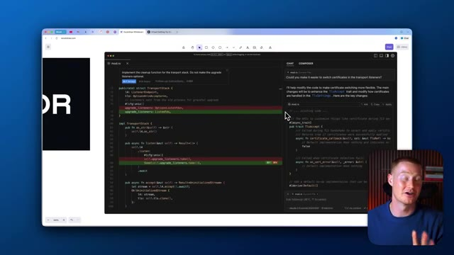
🔍 AgrandirDonc ces plateformes juste ici pourraient réellement vous aider à créer des applications pleinement fonctionnelles. Je parle de logiciels de niveau professionnel qui pourraient être déployés auprès de milliers et de dizaines de milliers d'utilisateurs, ce que des plateformes comme Bolt et Lovable auparavant n'étaient pas vraiment capables de faire. C'est la même chose pour Cloud Code. Cloud Code a complètement pris le monde d'assaut, mais c'est vraiment principalement destiné aux personnes techniques.
Interface & Outils : Navigateur web affichant un tableau blanc, éditeur de code Cursor, et terminal Claude Code.
Contenu textuel & Code : Texte "Developer Vibe Coding", logo de l'éditeur Cursor, interface de l'outil Claude Code et lignes de commandes Git. [DESC_ACTION] Présentation des outils de développement assistés par IA et de programmation au clavier.
Action / Démonstration : Explications face caméra et analyse conceptuelle des marchés.
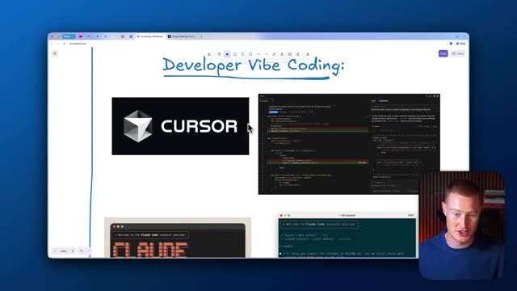
🔍 Agrandir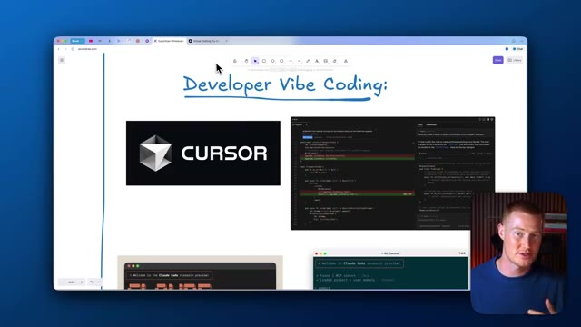
🔍 Agrandir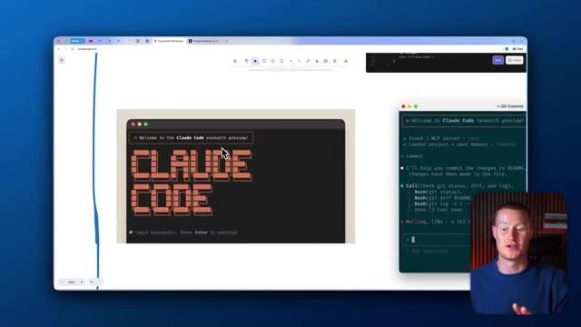
🔍 AgrandirSi vous voulez utiliser Cloud Code, vous devez comprendre ce que sont des choses comme les dépôts GitHub. Ce sont fondamentalement des endroits où vous pouvez réellement prendre votre code, le stocker, et ensuite vous pouvez faire ce que vous voulez avec ce code à partir de là. Mais passons maintenant au futur du Vibe coding dont tout le monde parle désormais. Donc, voici Claude code sur le web. Cela signifie fondamentalement qu'à l'intérieur de Claude, vous pouvez venir directement sur Claude.
Interface & Outils : Navigateur web affichant un outil de tableau blanc collaboratif (Eraser.io).
Contenu textuel & Code : Diagrammes visuels, illustrations et notes textuelles liées à "Claude Code on the web" et au "Future of Vibe Coding". [DESC_IMAGE_1] (Voir l'image 1) [DESC_IMAGE_2] (Voir l'image 2) [DESC_IMAGE_3] (Voir l'image 3)
Action / Démonstration : Le présentateur explique les concepts liés au code et aux outils cloud en s'appuyant sur les schémas affichés à l'écran.
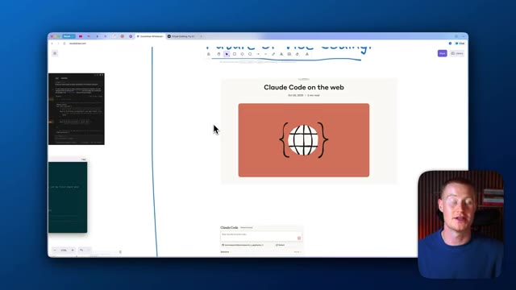
🔍 Agrandir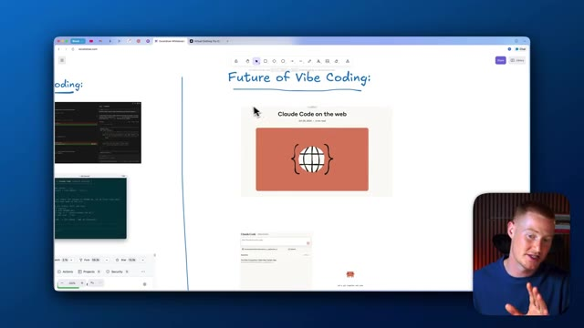
🔍 AgrandirEt directement à l'intérieur de ceci, vous pouvez instantanément cliquer sur ce bouton de code, et cela va ouvrir cette fenêtre de code Claude. Donc au lieu que nous ayons réellement à utiliser Cloud Code directement à l'intérieur de nos terminaux comme ça, genre vous ne voulez pas faire ça. Croyez-moi, si vous n'êtes pas technique, c'est un endroit effrayant où se trouver. Au lieu de cela, vous pouvez désormais y accéder directement à l'intérieur de votre application à l'intérieur de Cloud.
Interface & Outils : Navigateur web, interface Claude Code, tableau blanc Excalidraw, dépôt GitHub.
Contenu textuel & Code : Interface utilisateur de Claude Code sur le web, extraits de code, interface de terminal et documentation GitHub.
Action / Démonstration : Présentation de l'interface web de Claude Code et explication de son utilisation par rapport au terminal.
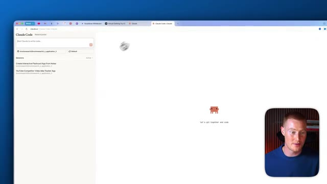
🔍 Agrandir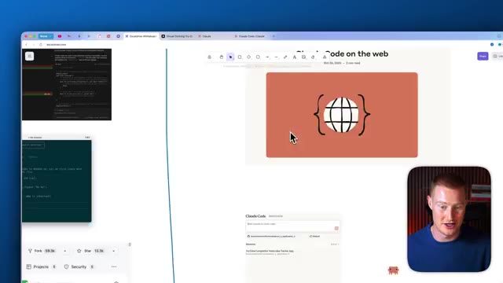
🔍 Agrandir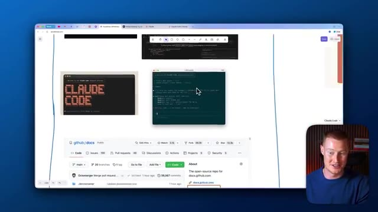
🔍 AgrandirDonc maintenant, je vais parler de la façon d'utiliser ceci. Et je vais en fait comparer cela à Bolt afin que nous puissions voir lequel est le meilleur. Très bien. Alors, première chose à faire, à l'intérieur de Cloud Code, il y a quelque chose que nous devons faire. Nous devons en fait connecter ceci à GitHub. Donc si vous ne savez pas ce qu'est GitHub, GitHub est, encore une fois, fondamentalement un endroit où vous pouvez stocker tout votre code dans un dépôt. Et si vous n'êtes pas technique, cela peut être un petit peu un casse-tête.
Interface & Outils : Présentation ou face-caméra explicatif du trader sans interface logicielle partagée.
Contenu textuel & Code : Explications orales des stratégies et mise en contexte méthodologique du marché.
Action / Démonstration : Explications face caméra et analyse conceptuelle des marchés.
So let me go ahead and do this now. I'm going to click on Install App. I need to confirm my account. I'm going to click on this. And then we'll have our account all hooked up inside of Cloud Code. And you can see I could actually click on this. And this is a previous GitHub repository, which is basically where all of my code is stored that Cloud Code actually wrote. So what I'm going to do now is let me give a prompt to actually build an app and code something from scratch for both of these platforms.
Interface & Outils : Présentation ou face-caméra explicatif du trader sans interface logicielle partagée.
Contenu textuel & Code : Explications orales des stratégies et mise en contexte méthodologique du marché.
Action / Démonstration : Explications face caméra et analyse conceptuelle des marchés.
Donc le prompt que je vais utiliser est : « Crée-moi une application de cartes mémoire qui m'aide à faire un vidage cérébral de toutes mes notes, puis tu les transformes en cartes mémoire interactives. » Je vais confier cela à Bolt V2 et je vais également le confier à Claude Code, et voyons quelles sont ces principales différences ici. Pendant que ceux-ci se chargent, je veux en fait parler de quelque chose qui est vraiment important. Donc Bolt V2 vient de sortir il y a quelques semaines, et cela intègre en fait Claude Code directement dans leur plateforme.
Interface & Outils : Présentation ou face-caméra explicatif du trader sans interface logicielle partagée.
Contenu textuel & Code : Explications orales des stratégies et mise en contexte méthodologique du marché.
Action / Démonstration : Explications face caméra et analyse conceptuelle des marchés.
Think of most of the abilities that Cloud Code has independently and combine that with something that is very simple to use and has a simple interface like Bolt. And those two things collide. And that is exactly what we're looking at right now inside of Bolt 2. So we have our Cloud Agent here, which should be able to do most of the heavy lifting that Cloud Code could usually do.
Interface & Outils : Navigateur web avec l'interface de développement Bolt (Bolt.new) et une incrustation vidéo du présentateur.
Contenu textuel & Code : Prompt utilisateur demandant de créer une application de flashcards ('build me a flashcard app...'), plan de développement étape par étape incluant la configuration de la base de données et des dépendances npm.
Action / Démonstration : Sélection de l'option 'Claude Agent' dans le menu contextuel de l'interface Bolt pour configurer l'agent de programmation IA.
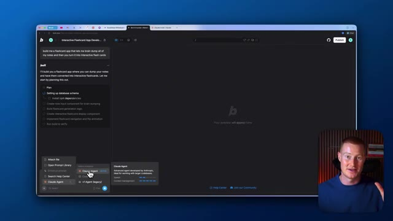
🔍 AgrandirAll right. So we have Cloud Code on the left and we have Bolt on the right. You can see Bolt is planning this out. It's going ahead. It's actually building out our project now. And same thing for Cloud Code. It's going ahead. It's writing all this code here. And both of these should be done here shortly. All right. So inside of Bolt, you can see we now have this interface called Brain Dump Flashcards. And I don't want to focus on the complexity or the style of our apps in this video.
Interface & Outils : Interfaces de développement Cloud Code et Bolt.new (StackBlitz).
Contenu textuel & Code : Plan de développement d'application ("Plan"), listes de tâches ("Update Todos"), code source et aperçu visuel d'une application de notes interactives.
Action / Démonstration : Génération automatique de code et construction d'une application fonctionnelle par les deux agents IA en parallèle.
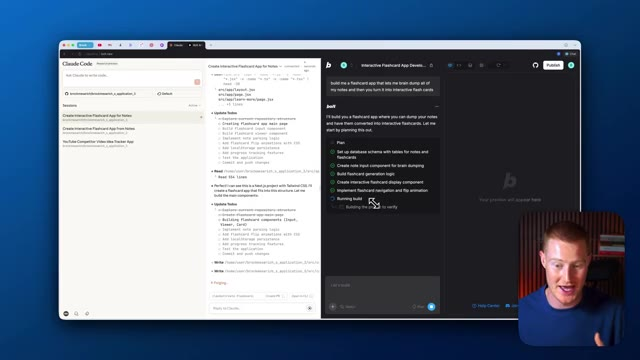
🔍 Agrandir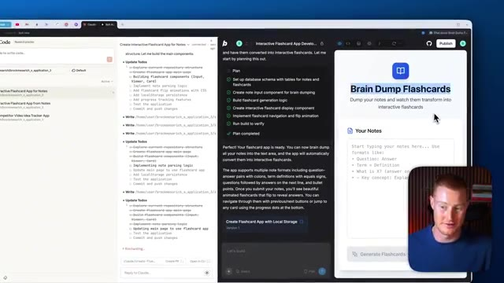
🔍 AgrandirJe veux simplement parler de l'infrastructure qui fait fonctionner ces deux plateformes et les comparer. C'est une application très simple. Je tiens à le préciser. Mais je vais en fait procéder et coller mes notes que j'ai prises de l'IA ici. Et ce que je vais faire, c'est que je vais cliquer sur générer des cartes mémos et instantanément comme ça, nous avons ces cartes mémos générées. Notre application fonctionne correctement. Nous avons tout cela directement ici. Et ce que nous pouvons réellement faire si nous le voulons, c'est que nous pouvons cliquer sur ce bouton publier et cela va instantanément publier notre application sur le web avec laquelle nous pourrions réellement commencer à interagir. Et juste comme ça, nous avons notre application sur cette URL ici. Nous pouvons personnaliser cette URL directement à l'intérieur de Bolt.
Interface & Outils : Bolt.new et Claude Code affichés simultanément en double écran de développement.
Contenu textuel & Code : Interface utilisateur d'application de flashcards, listes de tâches de développement ("Update Todos"), et code de génération de flashcards.
Action / Démonstration : Navigation et tests de l'application interactive de flashcards générée par l'IA avant publication.
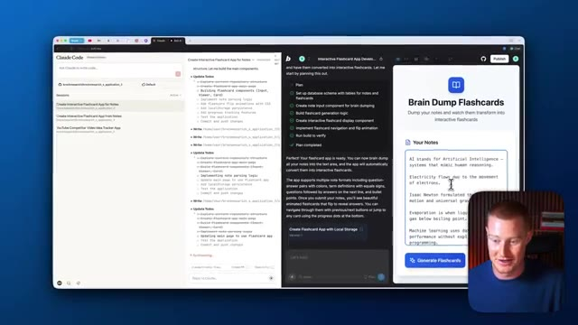
🔍 Agrandir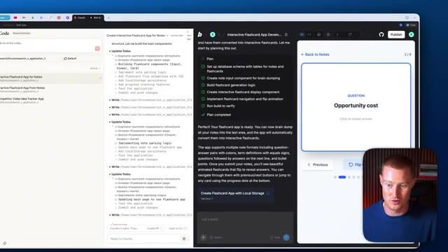
🔍 Agrandir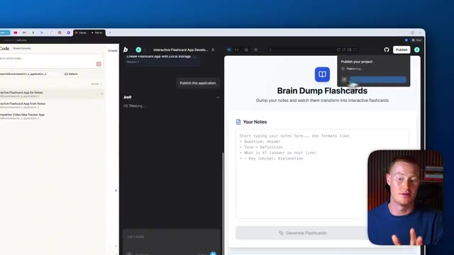
🔍 AgrandirWe can make it a custom domain that we actually have if we have one. And again, let me test out this app, you can see that our app is working properly directly inside of our web browser here. This is something really important that we're going to note when we compare this with CloudCode. So if I go back to this window, it looks like CloudCode is still actually writing the code and working on our app. So let's give it some time and then we'll come back to this. A couple minutes after Bolt actually finished coding our app, looks like CloudCode finished. And let's talk about something that's very important now. This is our output. Our output is the code that CloudCode wrote us. But the problem with this is we don't see our app live right here. In Bolt, you see that
Interface & Outils : Présentation ou face-caméra explicatif du trader sans interface logicielle partagée.
Contenu textuel & Code : Explications orales des stratégies et mise en contexte méthodologique du marché.
Action / Démonstration : Explications face caméra et analyse conceptuelle des marchés.
we actually have our app directly inside of our platform. You could see what it looks like. You could play around with it. You could interact with it and you could even launch it to a URL like I did here. Our app is now live that anybody can begin using. Inside of Claude Code, we don't have that ability. So what we could do is we could actually push this into GitHub. We now have all of our code stored there, but we're going to have to go ahead and integrate this into a terminal or something that is over the head of most non-technical users just to see what our app would look like in real time. This is why I really wanted to make this video because CloudCode for web is
Interface & Outils : Navigateur web, interface de développement Bolt.new et Claude Code.
Contenu textuel & Code : Application web interactive de flashcards ("Brain Dump Flashcards") avec interface utilisateur et notes textuelles.
Action / Démonstration : Navigation et démonstration d'une application web interactive fraîchement générée et publiée en ligne.
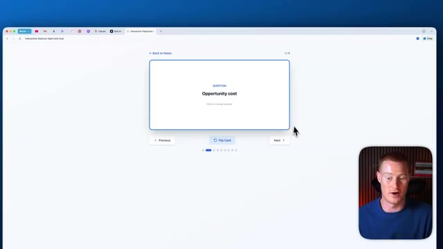
🔍 Agrandirpretty cool and we're getting closer to being able to use this if you're non-technical. But Bolt already has this baked directly into their platform where you could use the CloudCode agent, which is basically the same thing that we have with CloudCode right here, but the interface is much simpler to use and the utility of this is much higher. One thing I do want to say with CloudCode is it's pretty cool that we could actually use this now directly inside of our mobile app. So if you have the Claude mobile app, you could actually begin using this right now. And this way you can actually code on the go. But again, the problem with this is that we can't actually see
Interface & Outils : Navigateur web affichant l'interface de Bolt.new et l'application Claude Code.
Contenu textuel & Code : Interface utilisateur de Bolt avec le menu de sélection de l'agent "Claude Agent" et code source de l'application de flashcards.
Action / Démonstration : Navigation et démonstration de l'intégration de l'agent Claude au sein de la plateforme Bolt.
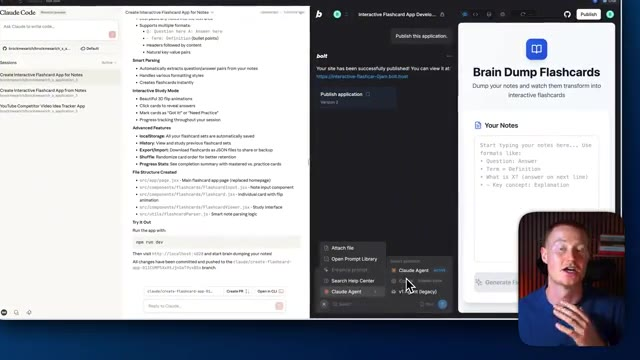
🔍 Agrandir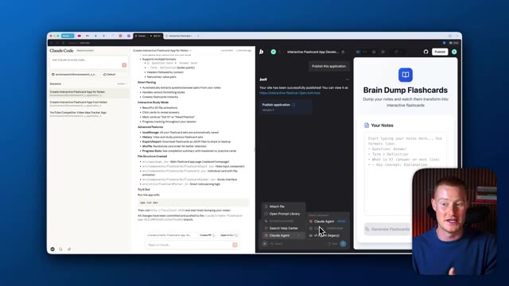
🔍 Agrandirwhat our app will look like. And we can't very simply publish and launch our app. Another thing that is pretty cool with Claude code is we could actually have it doing multiple things at once. So we can have an agent working on one part of our app and another agent working on the other part. And we could have it doing different tasks at a different time. Right now, Bolt, you can only they have it perform one task. You could obviously create a pretty comprehensive prompt and we'll go off and do all these things like one by one and we'll like cross those off the to-do list.
Interface & Outils : Navigateur web, Claude Code, interface Bolt, application web 'Brain Dump Flashcards'.
Contenu textuel & Code : Documentation de l'application, structure des fichiers React/JSX, commandes d'exécution (npm run dev) et interface de génération de flashcards.
Action / Démonstration : Présentation du déploiement de l'application et explication du fonctionnement multi-agent.
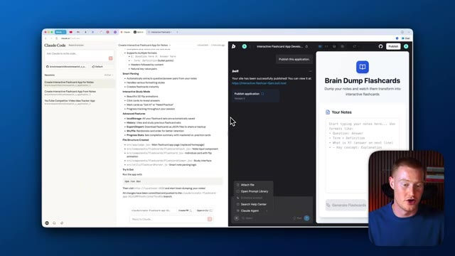
🔍 Agrandir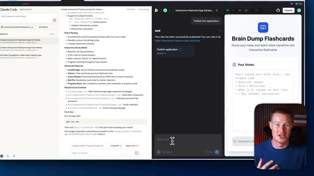
🔍 AgrandirDonc c'est une chose qui est plutôt cool à propos de CloudCode. Mais j'espère que si vous êtes restés jusqu'à la fin de cette vidéo, vous pouvez maintenant comprendre pourquoi moi personnellement j'utilise toujours Bolt qui a CloudCode intégré au lieu d'utiliser la nouvelle application web CloudCode dont tout le monde parle depuis son lancement hier. Si vous avez tiré de la valeur de cette vidéo, assurez-vous de laisser un pouce bleu et de commenter ce que vous en avez pensé.
Interface & Outils : Présentation ou face-caméra explicatif du trader sans interface logicielle partagée.
Contenu textuel & Code : Explications orales des stratégies et mise en contexte méthodologique du marché.
Action / Démonstration : Explications face caméra et analyse conceptuelle des marchés.
Abonnez-vous à la chaîne pour plus de contenu sur l'IA pour les non-techniciens cela étant dit les gars merci d'avoir regardé cette vidéo et je vous vois les gars dans la prochaine
Interface & Outils : Présentation ou face-caméra explicatif du trader sans interface logicielle partagée.
Contenu textuel & Code : Explications orales des stratégies et mise en contexte méthodologique du marché.
Action / Démonstration : Explications face caméra et analyse conceptuelle des marchés.